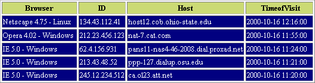

Cookie и отслеживание сеанса
Отслеживание пользователей и персональная настройка сайта относятся к числу самых популярных и вместе с тем неоднозначно воспринимаемых возможностей web-сайтов. Преимущества очевидны — вы можете предлагать пользователям именно ту информацию, которая их интересует. С другой стороны, возникает немало вопросов, связанных с конфиденциальностью, поскольку появляется возможность «следить» за тем, как пользователь перемещается от страницы к странице и даже от сайта к сайту.
Если отвлечься от проблем конфиденциальности, отслеживание пользовательских данных с применением cookie или других средств приносит огромную пользу как пользователю, так и сайту, обеспечивающему эти возможности. Пользователь выигрывает от того, что содержание сайта настраивается в соответствии с его личными предпочтениями, а из сайта исключается бесполезная или не представляющая интереса информация. Для администратора сайта отслеживание пользовательских предпочтений открывает совершенно новый уровень взаимодействия с пользователем, включая возможности целевого маркетинга и анализа популярности материалов сайта. В Web, где сейчас преобладает электронная коммерция, эти возможности стали практически стандартными.
Концепция «наблюдения» за пользователем в процессе перемещения по сайту обычно называется «отслеживанием сеанса» (session tracking). Принимая во внимание огромный объем полезной информации, получаемой в результате отслеживания сеанса на сайте, можно сказать, что преимущества отслеживания сеансов и персональной настройки содержания сайта значительно превышают любые недостатки. Вряд ли эту книгу можно было бы считать полноценным учебником по РНР, если бы я не посвятил в ней целую главу средствам отслеживания сеанса в РНР. В этой главе мы рассмотрим некоторые концепции, имеющие непосредственное отношение к отслеживанию сеансов, а именно — cookie и их применение, а также уникальные идентификаторы сеансов. Глава завершается сводкой стандартных функций РНР, предназначенных для отслеживания сеансов.
Cookie представляет собой небольшой пакет информации, переданный web-сервером и хранящийся на клиентском компьютере. В cookie можно сохранить полезные данные, описывающие состояние пользовательского сеанса, чтобы в будущем загрузить их и восстановить параметры сеансовой связи между сервером и клиентом. Cookie используются на многих сайтах Интернета для расширения возможностей пользователя и повышения эффективности сайта за счет отслеживания действий и личных предпочтений пользователя. Возможность хранения этих сведений играет ключевую роль на сайтах электронной коммерции, поддерживающих персональную настройку и целевую рекламу.
Вследствие того, что cookie обычно связываются с конкретным пользователем, в них часто сохраняется уникальный идентификатор пользователя (UIN). Этот идентификатор заносится в базу данных на сервере и используется в качестве ключа для выборки из базы всей информации, связанной с этим идентификатором. Конечно, сохранение UIN в cookie не является обязательным требованием; вы можете сохранить любую информацию при условии, что ее общий объем не превосходит 4 Кбайт (4096 байт).
В cookie хранятся и другие компоненты, при помощи которых разработчик может ограничивать использование cookie с позиций домена, пути, срока действия и безопасности. Ниже приведены описания различных компонентов cookie:
Хотя при создании cookie используются одни и те же синтаксические правила, формат хранения cookie зависит от браузера. Например, Netscape Communicator хранит cookie в формате следующего вида:
.phprecipes.com FALSE / FALSE 97728956 bgcolor blue
В Internet Explorer то же самое cookie выглядело бы иначе:
bgcolor
blue
localhost/php4/php.exe/book/13/
0
2154887040
29374385
522625408
29374377
*
Чтобы просмотреть cookie, сохраненные браузером Internet Explorer, достаточно открыть их в любом текстовом редакторе. Помните, что некоторые редакторы не обрабатывают завершающие символы новой строки и на месте этих символов в документе могут выводиться квадратики.
 Internet
Explorer сохраняет свои cookie в папке с именем «Cookies»,
a Netscape Communicator использует для этой цели один
файл с именем cookies.
Internet
Explorer сохраняет свои cookie в папке с именем «Cookies»,
a Netscape Communicator использует для этой цели один
файл с именем cookies.
Хватит теории. Конечно, вам не терпится поскорее узнать, как задать значение cookie в РНР. Оказывается, очень просто — для этой цели используется стандартная функция setcookie( ).
Функция setcookie( ) сохраняет cookie на компьютере пользователя. Синтаксис функции setcookie( ):
int setcookie (string имя [string значение [, int дата [, string путь [, string домен [, int безопасность]]]]])
Если вы прочитали общие сведения о cookie, то смысл параметров setcookie( ) вам уже известен. Если вы пропустили этот раздел и не знакомы с компонентами cookie, я рекомендую вернуться к началу главы и перечитать его, поскольку все параметры setcookie( ) были описаны выше.
Прежде чем следовать дальше, я попрошу вас перечитать следующую фразу не один и не два, а целых три раза. Значение cookie должно устанавливаться до передачи в браузер любой другой информации, относящейся к странице. Напишите эту фразу 500 раз в тетрадке, сделайте татуировку, научите своего попугая произносить эти слова — короче, проявите фантазию. Другими словами, значение cookie не может устанавливаться в произвольном месте web-страницы. Оно должно быть задано до отправки любых данных в браузер; в противном случае cookie не будет работать.
Есть еще одно важное ограничение, о котором также необходимо помнить, — вы не сможете создать cookie и использовать его на той же странице. Либо пользователь должен вручную обновить страницу (хотя рассчитывать на это нельзя), либо вам придется подождать следующего запроса этой страницы — и только после этого можно будет использовать cookie.
В следующем примере функция setcookie( ) используется для создания cookie с идентификатором пользователя:
$userid = "4139b31b7bab052";
$cookie_set = setcookie ("uid", $value, time()+3600, "/", ".phprecipes.com", 0);
Последствия создания cookie:
В следующем примере (листинг 13.1) cookie используется для хранения параметров форматирования страницы (в данном случае — цвета фона). Обратите внимание: значение cookie задается лишь в результате выполнения действия, установленного для формы.
Листинг 13.1. Сохранение цвета фона, выбранного пользователем
<?
// Если переменная $bgcolor существует
if (isset($bgcolor)) :
setcookie("bgcolor", $bgcolor, time()+3600);
?>
<html>
<body bgcolor="<?=$bgcolor:?>">
<?
// Значение $bgcolor не задано, отобразить форму
else :
<body bgcolor="white">
<form action="<? print $PHP_SELF; ?>
method=="post">
What's your favorite background color?
<select name="bgcolor">
<option value="red">red
<option value="blue">blue
<option value="green">green
<option value="b1ack">black
</select>
<input type="submit" value="Set background color">
</form>
<?
endif;
?>
</body>
</html>
При загрузке в браузер сценарий проверяет, было ли задано значение переменной $bgcolor. Если переменная существует, для страницы выбирается цвет фона, определяемый переменной $bgcolor. В противном случае в браузере выводится форма HTML с предложением выбрать цвет фона. После выбора цвета значение $bgcolor будет распознаваться при последующей перезагрузке той же страницы или при переходе к другой странице.
Кстати говоря, имена cookie могут выглядеть как элементы массива. Вы можете использовать имена вида uid[1], uid[2], uid[3] и т. д., а затем работать с ними, как с элементами обычного массива. Пример приведен в листинге 13.2.
Листинг 13.2.
<?
setcookie("phprecipes[uid]", "4139b31b7bab052", time( )+3600); setcookie("phprecipes[color]", "black", time( )+3600); setcookie("phprecipes[preference]", "english", timeO+3600);
if (isset($phprecipes)) :
while (list ($name, $value) = each ($phprecipes)) :
echo "$name = $value<br>\n";
endwhile;
endif:
?>
В результате выполнения этого фрагмента будет выведен следующий результат (а на клиентском компьютере будут созданы три cookie):
uid = 4139b31b7bab052
color = black
preference = english
 Хотя
массивы cookie очень удобны для хранения
всевозможной информации, следует помнить,
что некоторые браузеры ограничивают
количество создаваемых cookie (например, Netscape
Communicator разрешает создавать до 20 cookie на
домен).
Хотя
массивы cookie очень удобны для хранения
всевозможной информации, следует помнить,
что некоторые браузеры ограничивают
количество создаваемых cookie (например, Netscape
Communicator разрешает создавать до 20 cookie на
домен).
Cookie чаще всего применяются для хранения числовых идентификаторов (UIN), по которым в дальнейшем на сервере производится выборка информации,
относящейся к данному пользователю. Этот процесс продемонстрирован в листинге 13.3, где UIN сохраняется в базе данных MySQL. Сохраненные данные впоследствии используются для настройки параметров форматирования страницы.
Допустим, у нас имеется таблица userjnfo в базе данных с именем user. В ней хранятся следующие атрибуты пользователя: идентификатор, имя и адрес электронной почты пользователя. Определение таблицы выглядит так:
mysql>create table user_info (
->user_id char (18),
->fname char(15),
->email char(35));
По сравнению с полноценными сценариями регистрации пользователя, работа листинга 13.3 начинается «на половине пути»: предполагается, что данные пользователя (идентификатор, имя и адрес электронной почты) уже хранятся в базе данных. Чтобы пользователю не приходилось вводить всю информацию заново, идентификатор (в листинге 13.3 для простоты он равен 15) загружается из cookie на клиентском компьютере.
Листинг 13.3. Загрузка информации пользователя из базы данных
<?
if (! isset($userid)) :
$id = 15;
setcookie ("userid", $id, time( )+3600);
print "A cookie containing your userID has been set on your machine.
Please refresh the page to retrieve your user information";
else:
@mysql_connect("localhost", "web", "4tf9zzzf") or die("Could not connect to MySQL server!");
@mysql_select_db("user") or die("Could not select user database!");
// Объявить запрос
$query = "SELECT * FROM users13 WHERE user_id = '$userid'";
// Выполнить запрос
$result = mysql_query($query)l;
// Если совпадение будет найдено, вывести данные пользователя.
if (mysql_num_rows($result) == 1) :
$row = mysql_fetch_array($result);
print "Hi ".$row["?name"].",<br>";
print "Your email address is ".$row[ "email"];
else:
print "Invalid User ID!";
endif;
mysql_close();
endif;
?>
Листинг 13.3 показывает, как удобно использовать cookie для идентификации пользователей. Этот прием может использоваться в разнообразных ситуациях, от автоматической регистрации пользователя на сайте до отслеживания пользовательских параметров настройки.
В следующем разделе приведен сценарии полной регистрации пользователя и последующего сохранения UIN в базе данных.
 Функции
MySQL, встречающиеся в листинге 13.3, были
описаны в главе 11.
Функции
MySQL, встречающиеся в листинге 13.3, были
описаны в главе 11.
Вероятно, у вас уже возник вопрос: как сгенерировать UIN, который действительно был бы уникальным? Отложите в сторону учебники — замысловатые алгоритмы вам не понадобятся. В РНР предусмотрено простое средство для создания уникальных UIN — встроенная функция uniqid( ).
Функция uniqid( ) генерирует уникальный идентификатор.из 13 символов, значение которого основано на текущем времени. Синтаксис функции uniqid( ): int uniqid(string префикс [б boolean дополнение])
В параметре префикс передается строка, с которой должен начинаться UIN. Поскольку этот параметр является обязательным, при вызове необходимо передать хотя бы пустую строку. Если необязательный параметр дополнение равен TRUE, функция uniqid( ) генерирует UIN из 23 символов. Чтобы быстро создать уникальный идентификатор, достаточно при вызове uniqid( ) передать один параметр — пустую строку:
$uniq_id = uniqid(" ");
// Генерируется строка из 13 символов - например. '39b3209ce8ef2'
В другом варианте сгенерированное значение присоединяется к строке, определяемой параметром префикс:
$uniq_id = uniqid("php", FALSE):
// Генерируется строка из 16 символов - например. 'php39b3209ce8ef2'
Поскольку uniqid( ) генерирует UIN на основании текущего времени, существует ничтожная вероятность того, что идентификатор удастся подобрать. Чтобы значение идентификатора было действительно случайным, можно предварительно сгенерировать префикс при помощи еще одной стандартной функции РНР, rand( ). Эта возможность продемонстрирована в следующем примере:
srand((double) microtime( ) * 1000000);
$uniq_id = uniqid(rand( ));
Функция srand( ) инициализирует («раскручивает») генератор случайных чисел. Если вы хотите, чтобы функция rand( ) генерировала действительно случайные числа, необходимо предварительно вызвать srand( ). Передача rand( ) в качестве параметра uniqid( ) приводит к тому, что функция uniqid( ) вызывается с заранее сгенерированным случайным префиксом, что усложняет подбор сгенерированного UIN.
Владея методикой создания уникальных идентификаторов, мы теперь можем реализовать вполне реальную схему регистрации пользователей. При первой загрузке сценария в листинге 13.4 пользователю предлагается заполнить короткую
форму с именем и адресом электронной почты. Эта информация вместе со сгенерированным уникальным идентификатором сохраняется в таблице user_info, определение которой приведено перед листингом 13.3. Cookie с этим идентификатором сохраняется на компьютере пользователя. При всех последующих посещениях сценарий ищет в базе данных уникальный идентификатор, взятый из cookie, и выводит в браузере найденную информацию о пользователе.
Листинг 13.4. Процесс регистрации пользователя
<?
// Построить форму
$form = "
<form action=\"Listingl3-4.php\" method=\"post\">
<input type=\"hidden\" name=\"seenform\" value=\"y\"> \
Your first name?:<br>
<input type=\"text\" name=\"fname\" size=\"20\" maxlength=\"20\" value=\"\"><br>
Your email?:<br>
<input type=\"text\" name=\"email\" size=\"20\" maxlength=\"35\" value=\"\"><br>
<input type=\"submit\" value=\"Register!\">
</form>
// Если форма еще не отображалась
// и для данного пользователя еще не существует cookie...
1f ((! isset (Sseenform)) && (! isset ($userid))) :
print $form;
// Если форма отображалась.
// но данные пользователя еще не были обработаны...
elself (isset ($seenform) && (! isset ($sserid))) :
srand ((double) microtime( ) * 1000000);
$uniq_id = uniqid(rand( ));
// Подключиться к серверу MySQL и выбрать базу данных users
@mysql_pconnect("localhost", "root", "") or die("Could not connect to MySQL server!");
@mysql_select_db("book") or die("Could not select user database!");
// Объявить и выполнить запрос
$query = "INSERT INTO users13 VALUES('$uniq_id', '$fname', '$email')";
$result = mysql_query($query) or die("Could not insert user information!");
// Создать cookie "userid" со сроком действия один месяц, setcookie ("userid", $uniq_id, tirne( )+2592000);
print "Congratulations $fname! You are now registered! Your user information will be displayed uponon each subsequent visit to this page.";
// ... иначе, если cookie существует - использовать идентификатор
// пользователя для выборки данных из базы данных users elseif (isset($userid)) :
// Подключиться к серверу MySQL и выбрать базу данных users
@mysql_pconnect("localhost", "root", "") or die("Could not connect to MySQL server!");
@mysql_select_db("book") or die("Could not select user database!");
// Объявить и выполнить запрос
$query = "SELECT * FROM users,13 WHERE user_id = '$userid' ";
$result = mysql_query($query) or die("Could not extract user information!"
$row = mysql_fetch_array($result); print "Hi ".$row["fname"].",<br>";
print "Your email address is ".$row["email"];
endif;
?>
Обилие команд i f позволяет организовать весь процесс регистрации и последующую идентификацию пользователя в одном сценарии. Принципиально возможны три ситуации:
Конечно, общий процесс, продемонстрированный в листинге 13.4, может применяться при работе с любыми базами данных. Листинг всего лишь на очень простом уровне показывает, как на крупных сайтах организуется сохранение пользовательских данных, благодаря которому сайт «подстраивается» под каждого посетителя.
На этом завершается наше знакомство с применением cookie в РНР. Если вы захотите побольше узнать о механизме cookie, обратитесь к ресурсам Интернета, перечисленным в следующем разделе.
Ссылки по теме
Дополнительную информацию о cookie и их использовании можно найти в специализированных web-pecypcax:
Как говорилось выше, в cookie очень удобно хранить параметры, специфические для данного пользователя, автоматически загружаемые при последующих посещениях сайта. Впрочем, на cookie нельзя полностью положиться, потому что пользователи могут запретить их использование на своем компьютере в настройках браузера. К счастью, в РНР для сохранения подобной информации существует и другой способ. Эта методика называется отслеживанием сеанса (session tracking) и рассматривается в следующем разделе.
Сеансом (session) называется период времени, который начинается с момента прихода пользователя на сайт и завершается, когда пользователь покидает сайт. В течение сеанса часто возникает необходимость в сохранении различных переменных, которые бы «сопровождали» пользователя при перемещениях на сайте, чтобы вам не приходилось вручную кодировать многочисленные скрытые поля или переменные, присоединяемые к URL.
Рассмотрим следующую ситуацию. При входе на сайт пользователю присваивается уникальный идентификатор сеанса (SID), который сохраняется на компьютере пользователя в cookie с именем PHPSESSJD. Если использование cookie запрещено или cookie вообще не поддерживаются, SID автоматически присоединяется ко всем локальным URL на протяжении сеанса. В то же время на сервере сохраняется файл, имя которого совпадает с SID. По мере того как пользователь перемещается по сайту, значения некоторых параметров должны сохраняться в виде сеансовых переменных. Эти переменные сохраняются в файле пользователя. При последующем обращении к сеансовой переменной сервер открывает сеансовый файл пользователя и ищет в нем нужную переменную. В сущности, в этом и заключается суть отслеживания сеанса. Конечно, информация с таким же успехом может храниться в базе данных или в другом файле.
Интересно? Еще бы. После всего сказанного вы, несомненно, лучше поймете различные проблемы конфигурации, рассматриваемые ниже. Особенно важную роль играют три флага. Первый флаг, --enable-trans-id, включается в процесс конфигурации в том случае, если вы собираетесь использовать SID (см. ниже). Два других флага, track_vars и register_globals, включаются и отключаются по мере необходимости в файле php.ini. Последствия активизации этих флагов рассматриваются ниже.
--enable-trans-id
Если РНР компилируется с этим флагом, ко всем относительным URL автоматически присоединяется идентификатор сеанса (SID). Дополнение записывается в формате имя_сеанса=идентификатор_сеанса, где имя_сеанса определяется в файле php.ini (см. ниже). Если вы не захотите включать этот флаг, в качестве SID можно использовать константу.
track_vars
Установка флага track_vars позволяет использовать массивы $HTTP_*_VARS[], где * заменяется одним из значений EGPCS (Environment, Get, Post, Cookie, Server). Данный флаг необходим для того, чтобы значения SID передавались с одной страницы на другую. В РНР 4.03 этот флаг всегда находится в установленном состоянии.
register_globals
В результате установки этого флага все переменные EGPCS становятся доступными глобально. Если вы не хотите, чтобы массив глобальных переменных заполнялся данными, которые вам, возможно, и не понадобятся, флаг следует сбросить.
Если флаг register_globals сброшен, а флаг track_vars установлен, ко всем переменным GPC можно обращаться через массив $HTTP_*_VARS[]. Например, если сбросить флаг register_globals, к стандартной переменной $PHP_SELF придется обращаться в виде $HTTP_SERVER_VARS["PHP_SELF"].
Существует целый ряд других аспектов конфигурации, о которых следует позаботиться. Эти директивы перечислены в табл. 13.1 с указанием стандартных значений, задаваемых по умолчанию в файле php.ini. Перечисление производится в порядке появления директив в файле.
Таблица 13.1. Сеансовые директивы в файле php.ini
| Директива | Описание |
| session.save_handler = files |
Определяет способ хранения сеансовых данных на сервере. Возможны три варианта: в файле (files), в общей памяти (mm) или с использованием функций, определяемых пользователем (User). Последний вариант позволяет легко сохранить информацию в любом формате — например, в базе данных |
| session.save_path =/tmp |
Определяет каталог для сеансовых файлов РНР. На платформе Linux обычно используется значение по умолчанию ('/tmp'). На платформе Windows следует указать путь к какому-нибудь каталогу, в противном случае произойдет ошибка |
| session_use_cookies =1 |
При установке этого флага для сохранения идентификатора сеанса на компьютере пользователя используются cookie |
| session.name =PHPRESSID. |
Если флаг session.use_cookies установлен, то значение session.name используется в качестве имени cookie. Имя может состоять только из алфавитно-цифровых символов |
| session.auto_start = 0 |
При установке флага session.auto_start сеанс автоматически инициируется при первоначальном запросе со стороны клиента |
| session.cookie_lifetime = 0 |
Если флаг session.use_cookies установлен, то значение session.cookie_lifetime определяет срок действия отправляемых cookie. Если параметр равен 0, то все cookie становятся недействительными при завершении сеанса |
| session.cookie_path = / |
Если флаг session.use_cookies установлен, то значение session.cookie_path определяет каталог, для которого отправляемые cookie считаются действительными |
| session.cookie_domain = |
Если флаг session.use_cookies установлен, то значение session.cookie_domain определяет домен, для которого отправляемые cookie считаются действительными |
| session.serialize_handler = php |
Имя обработчика, используемого в процессе сериализации данных. В настоящее время определены два возможных значения: php и WDDX |
| session.gc_probability =1 | Вероятность активизации сборщика мусора РНР (в процентах) |
| session.gc_maxlifetime=1440 |
Промежуток времени (в секундах), по истечении которого данные сеанса считаются недействительными и уничтожаются. Отсчет начинается с момента последнего обращения пользователя в текущем сеансе |
| session.referer_check = |
Если этому параметру присвоено строковое значение, каждый запрос к странице при включенном отслеживании сеанса начинается с проверки того, что заданная строка присутствует в глобальной переменной $HTTP_REFERER. Если строка не найдена, идентификаторы сеансов игнорируются |
| session.enthropy_fiie = |
Ссылка на внешний файл с дополнительной случайной информацией, используемой при генерации идентификаторов сеансов. В системах UNIX для этой цели обычно используются два устройства, /dev/random и /dev/urandom. Устройство /dev/random получает случайные данные от ядра, а устройство /dev/urandom генерирует случайную строку при помощи хэш-алгоритма М05. Короче говоря, /dev/random работает быстрее, a /dev/urandom генерирует «более случайные» строки |
| session.enthropy_length = 0 | Если флаг session.enthropy_file установлен, то session.enthropyjength определяет количество байт, читаемых из файла session.enthropy_file |
| session.cache limiter = nocache | Способ управления кэшем для страниц сеанса. В настоящее время определены три возможных значения: nocache, public и private |
| session.cache_expire =180 | Продолжительность жизни кэшированных страниц сеанса (в минутах) |
После внесения всех необходимых изменений в настройку сервера мы переходим к непосредственной реализации отслеживания сеанса на вашем сайте. Благодаря нескольким стандартным функциям РНР этот процесс не так уж сложен. Первое, что необходимо знать, — сеанс инициируется функцией session_start( ). Конечно, при включении директивы session.auto_start в файл php.ini (см. выше) необходимость в вызове этой функции отпадает. Тем не менее, в оставшейся части этого раздела я буду использовать эту функцию, чтобы примеры выглядели более последовательно. Функция session_start( ) имеет простой синтаксис, поскольку она не получает параметров и возвращает логическую величину.
 Директива
session.save_handler настолько важна, что я счел
необходимым посвятить ей отдельный раздел.
Он находится в конце главы под заголовком «Назначение
пользовательских функций для хранения
сеансовых данных».
Директива
session.save_handler настолько важна, что я счел
необходимым посвятить ей отдельный раздел.
Он находится в конце главы под заголовком «Назначение
пользовательских функций для хранения
сеансовых данных».
session_start( )
Функция session_start( ) имеет двойное назначение. Сначала она проверяет, начал ли пользователь новый сеанс, и если нет — начинает его. Синтаксис функции
session_start( ): boolean session_start()
Если функция начинает новый сеанс, она выполняет три операции: назначение пользователю SID, отправку cookie (если в файле php.ini установлен флаг session_cookies) и создание файла сеанса на сервере. Второе назначение функции заключается в том, что она информирует ядро РНР о возможности использования в сценарии, в котором она была вызвана, сеансовых переменных.
Сеанс начинается простым вызовом session_start( ) следующего вида:
session_start( ):
Если сеанс можно создать, значит, его можно и уничтожить. Это делается функцией session_destroy( ).
 Функция
session_start( ) возвращает TRUE независимо от
результата. Следовательно, проверять ее в
условиях if или в команде die( ) бессмысленно.
Функция
session_start( ) возвращает TRUE независимо от
результата. Следовательно, проверять ее в
условиях if или в команде die( ) бессмысленно.
session_destroy()
Функция session_destroy( ) уничтожает все хранимые данные, относящиеся к сеансу текущего пользователя. Синтаксис функции session_destroy( ):
boolean session_destroy( )
Следует помнить, что эта функция не уничтожает cookie на браузере пользователя. Впрочем, если вы не собираетесь использовать cookie после конца сеанса, просто присвойте параметру session.cookie_lifetime в файле php.ini значение ( ) (используемое по умолчанию). Пример использования функции:
<?
session_start( );
// Выполнить некоторые действия для текущего сеанса
session_destroy( ):
?>
Теперь вы умеете уничтожать сеансы, и мы можем перейти к работе с сеансовыми переменными. Возможно, самой важной сеансовой переменной является SID (идентификатор сеанса). Его легко можно получить при помощи функции session_id( ).
session_id( )
Функция session_id( ) возвращает SID для сеанса, созданного функцией session_start( ). Синтаксис функции session_id( ):
string session_id ([string sfd])
Если в необязательном параметре передается идентификатор, то значение SID текущего сеанса изменяется. Однако следует учитывать, что cookie при этом заново не пересылаются. Пример:
<?
session_start()
print "Your session identification number is ".sessionjd( ):
session_destroy( ):
?>
Результат, выводимый в браузере, выглядит примерно так:
Your session identification number is 067d992a949114ee9832flcllcafc640
Как же создать свою сеансовую переменную? С помощью функции session_register( ).
session_register( )
Функция session_register( ) регистрирует имена одной или нескольких переменных для текущего сеанса. Синтаксис функции session_register( ):
boolean session_register (mixed имя_переменной1 [, mixed имя_переменной2... ])
Следует помнить, что вы регистрируете не сами переменные, а их имена. Если сеанс не существует, функция session_register( ) также неявно вызывает session_start( ) для создания нового сеанса.
Прежде чем приводить примеры использования session_register( ), я хочу представить еще одну функцию, связанную с отслеживанием сеанса, — session_is_registered( ). Эта функция проверяет, была ли зарегистрирована переменная с заданным именем.
session_is_registered( )
Часто требуется определить, была ли ранее зарегистрирована переменная с заданным именем. Задача решается при помощи функции session_is_registered( ), имеющей следующий синтаксис:
boolean session_is_registered (string имя_переменной)
Применение функций session_register( ) и session_is_registered( ) будет продемонстрировано на классическом примере использования сеансовых переменных — счетчике посещений (листинг 13.5).
Листинг 13.5. Счетчик посещений сайта пользователем
<?
session_start( ):
if (! sessionjs_registered('hits')) :
session_register( 'hits' ) ;
endif ;
$hits++:
print "You've seen this page $hits times.
?>
Сеансовые переменные можно не только создавать, но и уничтожать. Для этой цели применяется функция session_unregister( ).
session_unregister( )
Сеансовые переменные уничтожаются функцией session_unregister( ). Синтаксис:
boolean session_unregister (string имя_переменной')
При вызове функции передается имя сеансовой переменной, которую вы хотите уничтожить.
<?
session_start()
session_register('username');
// Использовать переменную $username.
// Когда переменная становится ненужной - уничтожить ее.
session_unregister('username');
session_destroy();
?>
Как и в случае с функцией session_register, помните, что в параметре указывается не сама переменная (то есть имя с префиксом $). Вместо этого указывается имя переменной.
session_encode( )
Функция session_encode( ) обеспечивает чрезвычайно удобную возможность форматирования сеансовых переменных для хранения (например, в базе данных). Синтаксис функции session_encode( ):
boolean session_encode( )
В результате выполнения этой функции все сеансовые данные форматируются в одну длинную строку, которую можно сохранить в базе данных.
Пример использования session_encode( ) приведен в листинге 13.6. Предположим, что на компьютере «зарегистрированного» пользователя имеется cookie, в котором хранится уникальный идентификатор этого пользователя. Когда пользователь запрашивает страницу, содержащую листинг 13.6, UID читается из cookie и присваивается идентификатору сеанса. Мы создаем несколько сеансовых переменных и присваиваем им значения, после чего форматируем всю информацию функцией session_encode( ) и заносим в базу данных MySQL.
Листинг 13.6. Использование функции session_encode( ) для сохранения данных в базе данных MySQL
<?
// Инициировать сеанс и создать сеансовые переменные
session_register('bgcolor');
session_register('fontcolor');
// Предполагается, что переменная $usr_id (с уникальным
// идентификатором пользователя) хранится в cookie
// на компьютере пользователя.
// При помощи функции session_id( ) присвоить идентификатору
// сеанса уникальный идентификатор пользователя (UID),
// хранящийся в cookie. $id = session_id($usr_id);
// Значения следующих переменных могут задаваться пользователем
// на форме HTML $bgcolor = "white"; $fontcolor = "blue";
// Преобразовать все сеансовые данные в одну строку
$usr_data = session_encode( );
// Подключиться к серверу MySQL и выбрать базу данных users
@mysql_pconnect("localhost", "web", "4tf9zzzf")
or die("Could not connect to MySQL server!");
@mysql_select_db("users")
or die("Could not select user database!");
// Обновить пользовательские параметры страницы
$query = "UPDATE user_info set page_data='$usr_data' WHERE user_id= '$id'";
$result - mysql_query($query) or die("Could not update user information!");
?>
Как видите, быстрое преобразование всех сеансовых переменных в одну строку избавляет нас от необходимости создавать несколько полей для хранения/загрузки данных, а также несколько уменьшает объем программы.
session_decode( )
Все сеансовые данные, ранее преобразованные в строку функцией sessi on_encode( ), восстанавливаются функцией session_decode( ). Синтаксис:
string session_decode (string сеансовые_данные)
В параметре сеансовые_данные передается преобразованная строка сеансовых переменных, возможно — прочитанная из файла или загруженная из базы данных. Строка восстанавливается, и все сеансовые переменные в строке преобразуются к исходному формату.
В листинге 13.7 продемонстрировано восстановление закодированных сеансовых переменных функцией session_decode( ). Предположим, таблица MySQL с именем user_info состоит из двух полей: user_id и page_data. Пользовательский UID, хранящийся в cookie на компьютере пользователя, применяется для загрузки сеансовых данных, хранящихся в поле page_data. В этом поле хранится закодированная строка переменных, одна из которых ($bgcolor) содержит цвет фона, выбранный пользователем.
Листинг 13.7. Восстановление сеансовых данных, хранящихся в базе данных MySQL
<?
// Предполагается, что переменная $usr_id (с уникальным
// идентификатором пользователя) хранится в cookie
// на компьютере пользователя.
$id = session_id($usr_id);
// Подключиться к серверу MySQL и выбрать базу данных users
@mysq]_pconnect("localhost", "web", "4tf9zzzf")
or die("Could not connect to MySQL server!");
@mysql_select_db("users")
or die("Could not select company database!");
// Выбрать данные из таблицы MySQL
$query = "SELECT page_data FROM user_info WHERE user_id= '$id'",
Sresult = mysql_query($query);
$user_data = mysql_result($result, 0. "page_data");
// Восстановить данные session_decode($user_data):
// Вывести одну из восстановленных сеансовых переменных
print "BGCOLOR: $bgcolor";
?>
Как видно из двух приведенных листингов, функции session_ encode( ) и ses-sion_decode( ) обеспечивают очень удобные и эффективные сохранение и загрузку сеансовых данных.
Назначение пользовательских функций для хранения сеансовых данных
Хранить сеансовые данные в файлах удобно, но вполне возможно, вы захотите воспользоваться другими средствами — например, базами данных. А может быть, вы хотите применить один и тот же сценарий на разных сайтах для разных баз данных. Существует и другая распространенная проблема — стандартная для РНР процедура хранения сеансовых данных в файлах затрудняет совместное использование данных на разных серверах. К счастью, все эти проблемы отслеживания сеансов в РНР решаются очень просто, поскольку РНР дает пользователю возможность установить собственную процедуру сохранения при помощи стандартной функции session_set_save_handler( ).
Функция session_set_save_handler( ) определяет процедуры сохранения и загрузки сеансовых данных пользовательского уровня.
Синтаксис функции session_set_save_handler():
void session_set_save_handler (string open, string close, string read, string write, string destroy, string go)
Шесть параметров session_set_save_handler( ) соответствуют шести функциям, вызываемым сеансовыми функциями РНР. Хотя имена этих функций могут быть произвольными, каждая функция должна получать жестко заданный набор параметров. Перед тем как переходить к рассмотрению примера, просмотрите таблицу 13.2 — в ней описаны назначение всех шести функций и их параметры.
 Чтобы
использовать функцию session_set_save_handler( ),
необходимо присвоить па-раметру session.save_handler
в файле php.ini значение user.
Чтобы
использовать функцию session_set_save_handler( ),
необходимо присвоить па-раметру session.save_handler
в файле php.ini значение user.
Таблица 13.2. Шесть параметров функции session_set_save_handler( )
| Параметр | Описание |
| sess_close( ) | Вызывается при завершении сценария, в котором реализуются сеансовые функции. Не путайте эту функцию с функцией sess_destroy( ), предназначенной для уничтожения сеансовых переменных. Функция sess_close( ) вызывается без параметров |
| sess_destroy($идент_ceaнca) | Удаляет все сеансовые данные. Параметр определяет удаляемый сеанс |
| sess_gc($срок_действия) | Удаляет все сеансы с завершенным сроком действия. Срок определяется параметром $срок_действия, значение которого задается в секундах. Параметр читается из файла php.ini и соответствует значению session.gcjifetime |
| sess_open($путь, $имя) | Вызывается при инициализации нового сеанса функцией session_start( ) или session_register( ). Два параметра читаются из файла php.ini и соответствуют значениям session.save_path и session.name |
| sess_read($ключ) | Используется для выборки значения сеансовой переменной, определяемой заданным ключом |
| sess_write($ключ, $значение) | Используется для сохранения сеансовых данных. Любые данные, сохраненные функцией sess_write( ), позднее могут быть прочитаны функцией sess_read( ). Параметр $ключ соответствует имени сеансовой переменной, а параметр $значение — значению, связываемому с заданным ключом |
Теперь, когда вы знаете все, что необходимо знать о параметрах session_set_save_handler( ), мы рассмотрим пример реализации сеансовых функций на базе MySQL (листинг 13.8).
Листинг 13.8. Реализация сеансовых функций на базе MySQL
<?
// Реализация сеансовых функций на базе MySQL
// Хост, имя пользвателя и пароль
$host = "localhost"; $user = "web"; $pswd = "4tf9zzzf";
// Имена таблицы и базы данных
$db = "users";
$session table = "user session data";
// Прочитать значение sess.gc_lifetime из файла php.ini
$sess_life = get_cfg_var("sess.gc_lifetime");
// Функция : mysql_sess_open()
// Назначение: подключение к серверу MySQL
// и выбор базы данных.
function mysql_sess_open($save_path. $session_name) {
GLOBAL $host. $user, $pswd, $db;
@mysql_connect($host, $user, $pswd)
or die("Can't connect to MySQL server!");
@mysql_select_db($db)
or die("Can't select session database!");
}
// Функция: mysql_sess_close()
// Назначение: в реализации на базе MySQL эта функция не используется.
// Тем не менее, она Обязательно* должна быть определена.
function diysql_sess_close() {
return true:
}
// Функция: mysql_sess_read()
// Назначение: загрузка информации из базы данных MySQL.
function mysql_sess_read($key) {
GLOBAL $session_table:
$query = "SELECT value FROM $session_table WHERE sess_key = '$key'";
$result = mysql_query( $query);
if (list($value) = mysql_fetch_row($result)) :
return $value;
endlf;
return false;
}
// Функция: mysql_sess_write( )
// Назначение: запись информации в базу данных MySQL.
function mysql_sess_write($key, $val) {
GLOBAL $sess_life, $session_table;
$expiratlon = time() + $sess_life;
$query = "INSERT INTO Ssession_table VALUES('$key', '$expiration', '$value')";
$result = mysql_query($query);
// Если запрос на вставку данных завершился неудачей // из-за присутствия первичного ключа в поле sess_key, // выполнить обновление.
if (! $result) :
$query = "UPDATE $session_table
SET sess_expiration = '$expiration', sess_value='Svalue'
WHERE sess_key = '$key'"; $result = mysql_query($result);
endif;
}
// Функция: mysql_sess_destroy()
// Назначение: удаление из таблицы всех записей с ключом, равным $sess_id
function mysql_sess_destroy(Ssess_id) {
GLOBAL $session_table:
$query = "DELETE FROM $session_table WHERE sess_key = '$sess_id'";
$result = mysql_result($query);
return $result;
}
// Функция: mysql_sess_gc()
// Назначение: удаление всех записей, у которых
// срок жизни < текущее время - session.gc_lifetime
function mysql_sess_gc($max_lifetime) {
GLOBAL $session_table:
$query = "DELETE FROM $session_table WHERE sess_expiration < ".time();
$result = mysql_query($query);
return mysql_affected_rows();
session_set_save_handler("mysql_sess_open", "mysql_sess_close","mysql_sess_read", "mysql_sess_write", "mysql_sess_destroy", "mysql_sess_gc");
?>
После того как эти шесть функций будут зарегистрированы в программе, их можно вызывать по абстрактным именам (sess_close( ), sess_destroy( ), sess_gc( ), sess_open( ), sess_read( ) или sess_write( )). Такой подход удобен тем, что вы можете создать сколько угодно реализаций и переключаться между ними, вызывая ses-sion_set_save_handler( ) по мере необходимости.
Проект: журнал посещений сайта
Статистические сведения о посетителях сайта приносят немалую пользу. Как вы уже знаете, сохранение информации о посетителях широко практикуется на сайтах рекламных web-агентств и порталов, а также на многих других сайтах, желающих получить дополнительные сведения о своих посетителях. Хотя системы учета бывают невероятно сложными, даже относительно простая система ведения учета открывает немало интересных возможностей. Я покажу, как реализовать простейший журнал посещений на базе РНР, MySQL и cookie.
 В
проекте использована методика
идентификации браузера, описанная в главе 8.
Если вы пропустили главу 8 или описание
проекта, я настоятельно рекомендую
вернуться и просмотреть код проекта.
В
проекте использована методика
идентификации браузера, описанная в главе 8.
Если вы пропустили главу 8 или описание
проекта, я настоятельно рекомендую
вернуться и просмотреть код проекта.
Как было сказано ранее, наша система будет относительно простой — посещения будут отслеживаться только для индексной страницы сайта. При появлении нового посетителя сценарий РНР проверяет, существует ли на компьютере посетителя cookie. Если cookie находится, значит, пользователь посещал сайт в течение определенного интервала времени (который задается администратором сайта в инициализационном файле), и сценарий не учитывает новое посещение. Если cookie отсутствует или интервал между посещениями превысил заданную величину, информация сохраняется в таблице MySQL, а на компьютер посетителя создается cookie.
Как реализовать подобный сценарий на РНР? Прежде всего необходимо создать таблицу MySQL для хранения информации:
mysql>create table visitors (
->browser char(85) NOT NULL. ->ip char(30) NOT NULL.
->host char(85) NOT NULL.
->timeOfVisit datetime NOT NULL
->);
В поле browser хранится информация, непосредственно относящаяся к браузеру посетителя. Она берется из переменной РНР с именем $HTTP_USER_AGENT. В поле ip хранится IP-адрес посетителя. В поле host хранится информация о провайдере, от которого поступил IP-адрес. Наконец, поле timeOfVisit содержит дату и время посещения сайта.
 Полноценное
приложение для ведения журнала посещений
имеется на сайте ресурсов РНР phpinfo.net (http://www.phpinfo.net).
Более того, вы сможете непосредственно
Полноценное
приложение для ведения журнала посещений
имеется на сайте ресурсов РНР phpinfo.net (http://www.phpinfo.net).
Более того, вы сможете непосредственно
на сайте увидеть, как оно работает. К сожалению, перед посещением этого сайта вам
придется вспомнить школьный курс французского языка.
Затем мы создаем инициализационный файл приложения init.inc (листинг 13.9), содержащий определения глобальных переменных и основных функций. Обратите внимание: в функции viewStats( ) используется сценарий sniffer.php из главы 8. Этот сценарий включается в файл init.inc по мере необходимости. Рекомендую потратить немного времени на просмотр этого сценария и комментариев к нему.
Листинг 13.9. Инициализационный файл приложения (init.inc) <?
// Файл: init.inc
// Назначение: инициализационный файл журнала посещений сайта
// Параметры соединения с сервером MySQL $host = "localhost";
$user = "root"; $pswd = "";
// Имя базы данных Sdatabase = "myTracker";
// Имя таблицы $visitors_table = "visitors":
@mysql_pconnect($host, $user, $pswd) or die("Couldn't connect to MySQL server!");
// Выбрать базу данных
@mysql_select_db($database) or die("Couldn't select $database database!");
// Максимальное количество посещений, отображаемое в таблице $maxNumVisitors = "5";
// Имя cookie
$cookieName = "visitorlog";
// Значение cookie $cookieValue="1";
// Срок, который должен пройти с момента последнего посещения сайта,
// чтобы информация о текущем посещении была сохранена в базе данных.
// Если переменная $timeLimit равна 0. сохраняются все посещения
// независимо от их частоты.
// Остальные целочисленные значения интерпретируются как интервал
// времени в секундах.
$timeLimit = 3600:
// Формат отображения данных в браузере
$header_color = "#cbda74";
$table_color = "#000080";
$row_color = "IcOcOcO";
$font_color = "#000000":
$font_face = "Arial. Times New Roman. Verdana";
$font_size = "-1";
function recordUser() {
GLOBAL $visitors_table, $HTTP_USER_AGENT, $REMOTE_AODR, $REMOTE_HOST; if ($REMOTE_HOST — "") :
$REMOTE_HOST - "localhost"; endif;
$timestamp - date("Y-m-d H:i:S");
$query - "INSERT INTO $visitors_table VALUES('$HTTP_USER_AGENT', '$REMOTE_ADDR', '$REMOTE_HOST', '$timestamp')";
Sresult = @mysql_query($query); }
// recordUser function viewStats() {
GLOBAL $visitors_table, $maxNumVisitors, $table_color, $header_color;
GLOBAL $row color. $font color, $font face, $font size:
$query = "SELECT browser, ip. host. TimeofVisit FROM $visitors_table ORDER BY TimeofVisit desc LIMIT 0, $maxNumVisitors";
$result = mysql_query($query);
print "<table cellpadding=\"2\" cellspacing=\"1\" width = \"700\" border = \"0\" bgcolor=\ " $table_color\ ">";
print "<tr bgcolor= \"$header_color\"><th>Browser</th><th>IP</th><th>Host</ th><th>TimeofVisit</th></tr>";
while($row = mysql_fetch_array($result));
list ($browse_type, $browse_version) = browser_info ($row["browser"]); $op_sys = opsys_info ($row["browser"]);
print "<tr bgcolor=\"$row_color\">";
print "<td><font color=\"$font_color\" face=\"$font_face\" size=\"$font_size\">$browse_type $browse_version = $op_sys</font></td>";
print "<td><font color=\"$font_color\" face=\"$font_face\" si ze=\"$font_size\">".$row["ip"]."</f ont></td>";
print "<td><font color=\"$font_color\" face=\"$font_face\" size=\"$font_size\">".$row["host"]."</font></td>";
print "<td><font color=\"$font_color\" face=\"$font_face\" size=\"$font_size\">";
print $row["TimeofVisit"]."</font></td>";
print "</tr>";
endwhile;
print "</table>"; }
// viewStats
?>
Фрагмент кода, приведенный в листинге 13.10, проверяет существование cookie и при необходимости вызывает функцию recordUser( ). Я привожу этот фрагмент в составе очень простого индексного файла index.php.
Листинг 13.10. Проверка существования cookie (index.php)
<?
include("Listing13-9.php"); if (! isset($$cookieName)) :
// Создать cookie
setcookie($cookieName, $cookieValue, time()+$timeLimit);
// Сохранить информацию о посетителе recordUser();
endif:
?>
<html>
<head>
<title>Wecome to My Site!</title>
</head>
<body bgcolor="#c0c0c0" text="#000000" link="#808040" " vlink="#808040" alink="#808040">
Welcome to my site. <a href = "visitors.php">Check out who else has recently visited</a>.
</body>
</html>
Как организовать просмотр информации, хранящейся в базе данных MySQL, в браузере? Задача решается простым вызовом функции viewStats( ) в отдельном файле visitors.php:
<html>
<?
include("sniffer.inc"):
include("init.inc");
?>
<head>
<title>Most recent <?=$maxNumVisitors:?> visitors</title>
</head>
<body bgcolor="#ffffff" text="#000000" link="#808040" vlink="#808040" alink="#808040">
viewStats( );
?>
</body>
</html>
Возможно и другое решение — включить весь код HTML в функцию viewStats( ), а затем просто включить sniffer.inc, init.inc и вызов viewStats( ) в отдельный файл. Выбор зависит от того, до какой степени вы хотите интегрировать форматирование таблицы с процессом выборки данных.
На рис. 13.1 показан пример выходных данных viewStats( ) для атрибутов форматирования, заданных в файле init.inc.

Рис. 13.1. Пример результата, сгенерированного функцией viewStats( )
Существует немало путей для расширения практических возможностей этого приложения. Например, для отслеживания посещений со страницами сайта часто связываются идентификаторы, по которым в дальнейшем можно следить за перемещением пользователей между страницами. В рассмотренном проекте для этого в таблицу MySQL следует включить дополнительное поле, в котором хранится идентификатор страницы, а затем переопределить функцию recordllser( ) с дополнительным параметром. Идентификатор страницы сохраняется в cookie. При поступлении очередного запроса сценарий проверяет существование cookie для конкретной страницы, информация о которой регистрируется в журнале.
В этой главе был представлен один из самых замечательных аспектов языка РНР — отслеживание сеанса. В частности, были рассмотрены следующие темы:
Концепция сеанса открывает очень широкие возможности перед разработчиками web-сайтов, ориентированных на пользователя. Настоятельно рекомендую поэкспериментировать с сеансовыми средствами РНР — думаю, вы оцените ту пользу, которую они могут принести.
На этом завершается вторая часть книги. Третья часть, «РНР для профессионалов», открывается обзором интеграции РНР с XML. Не расслабляйтесь, самое интересное впереди.